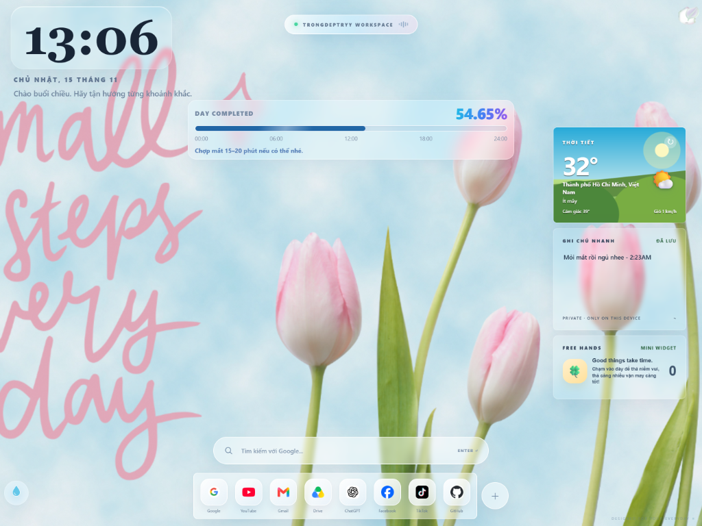

Không gian của bạn
Sắp xếp widget, liên kết nhanh, hình nền và giao diện theo cách bạn thấy thoải mái nhất.
GlassHome biến trang tab mới thành một góc nhỏ của riêng bạn — dịu mắt, hữu ích và luôn nhắc bạn dành chút quan tâm cho chính mình.

GlassHome kết hợp tiện ích quen thuộc với những lời nhắc nhẹ nhàng, để trang tab mới trở thành không gian bạn muốn quay lại.
Sắp xếp widget, liên kết nhanh, hình nền và giao diện theo cách bạn thấy thoải mái nhất.
Đồng hồ, tiến trình trong ngày và lời chào cá nhân giúp bạn bắt đầu ngày mới có chủ đích.
Nhắc uống nước có thể tùy chỉnh thời gian và mục tiêu — một lời nhắc nhỏ giữa ngày bận rộn.
Ghi lại điều cần nhớ ngay khi mở tab. Ghi chú và tùy chỉnh được lưu trong trình duyệt trên thiết bị.
Thời tiết, tìm kiếm, bookmark và liên kết yêu thích ở ngay nơi bạn bắt đầu công việc.
GlassHome được tạo ra để công nghệ trở nên gần gũi hơn — và đôi khi nhắc ta nghỉ một nhịp.
Một số tính năng như thời tiết, gợi ý tìm kiếm và favicon cần kết nối Internet.
Mình là một người trẻ đang học cách bước vào thế giới công nghệ. GlassHome bắt đầu từ mong muốn làm trang tab mới bớt đơn điệu — rồi dần trở thành một dự án nhỏ để mình học hỏi, thử nghiệm và chia sẻ.
Mình xây dựng dự án với sự hỗ trợ của AI, nhưng ý tưởng và mong muốn tạo ra một trải nghiệm dễ chịu hơn luôn bắt đầu từ những điều rất đời thường.
Ghi chú và tùy chỉnh của bạn được lưu cục bộ trong trình duyệt. Các tính năng trực tuyến như thời tiết, tìm kiếm và favicon sẽ gửi yêu cầu đến dịch vụ tương ứng khi bạn sử dụng.
Khám phá mã nguồn GlassHome và tìm hiểu cách cài đặt trên trình duyệt của bạn.
Khám phá mã nguồn